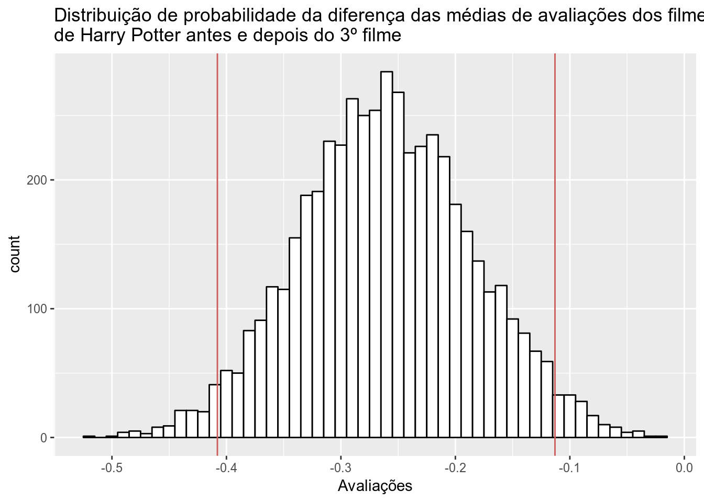
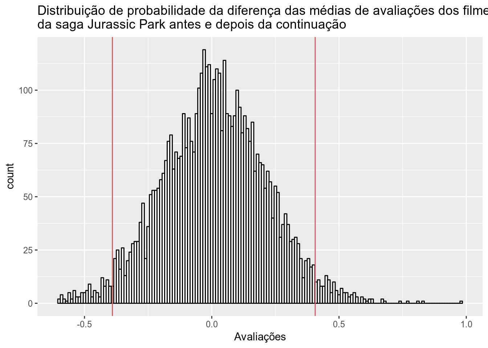
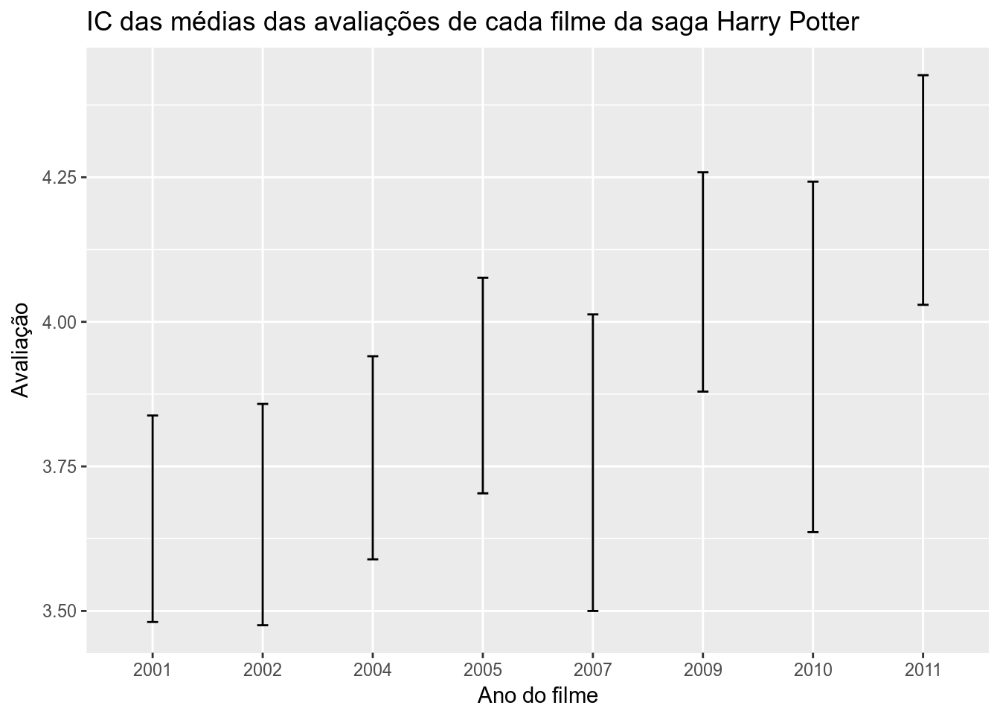
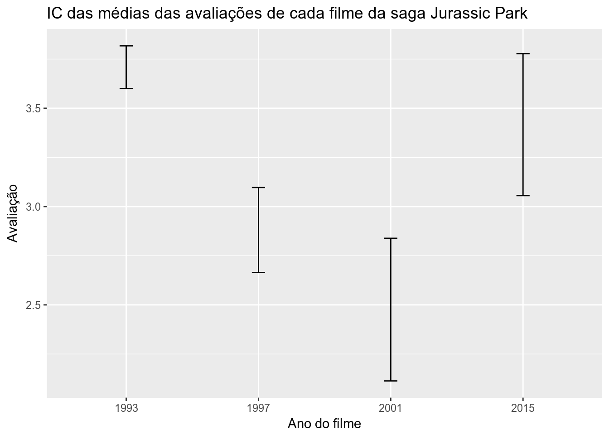

Vamos falar de filmes?
Não mexa no meu clássico >:(
Nos últimos anos, tivemos o prazer ou, para alguns, o desprazer de ter tido sequencias enormes de filmes, algumas com mais episódios ou temporadas até que muitas séries de TV por aí, como o exemplo de Star Wars, que já possui 3 trilogias com mais uma confirmada e dois filmes derivados da saga ou até mesmo a sequencia de filmes do universo marvel que já conta com 20 filmes, tendo lançamentos já confirmados para mais de 6 filmes nos próximos anos. Essas sagas são aclamadíssimas pelo grande público e faturam bilhões por ano, mas será que a qualidade e a atração do público se mantém ao longo da sequencia? e além disso, isso me leva a pensar também não só nas sagas da atualidade… poderíamos pensar também em sagas do passado que resolveram dar sequencia ou fazer remakes na atualidade, como Jurassic Park, Star Wars, Star Trek… para estas, será que depois de tantos anos, o público continua a gostar da saga ou será que o saudosismo se sai maior? Para responder essas perguntas usaremos dados do MovieLens que agrupa avaliações de filmes lançados até 10/2016.
Os dados fornecidos pelo MovieLens, é uma amostra que contém os títulos dos filmes, com seus anos de lançamento, as avaliações dos filmes que podem variar entre 0 e 5 com intervalos de 0.5 (0, 0.5, 1, 1.5, …, 5), os gêneros entre outras variáveis que não serão úteis para nossa análise por enquanto.
Para iniciar, eu resolvi usar um exemplo individual de saga como base, a escolhida foi Harry Potter, por ser uma saga que surgiu já nos anos 2000 e acaba tendo menos saudosismo envolvido, se comparado à sequencias como Star Wars. Como sabemos, os filmes da saga principal de Harry Potter são 8 (desconsiderando os derivados) tendo sido lançados entre 2001 e 2011.
Eu não sou um fã de Harry Potter, não assisti todos os filmes e queria saber de alguém onde foi um grande divisor de águas em Harry Potter, que eu pudesse separar na linha do tempo em dois grupos, os filmes antes dele e os filmes depois dele para fazer uma comparação sobre a sequencia ter se perdido ao longo do caminho… Ao fazer uma pequena pesquisa com meus amigos fãs da saga, vi que eles acham que o grande divisor é o 3º filme, daí, resolvi comparar as avaliações dos filmes que vieram do 3º pra trás com os que vieram depois do terceiro, para entender se a saga começou a melhorar, piorar ou manteve sua qualidade ao longo dos filmes.
O gráfico abaixo apresenta a distribuição de probabilidade da diferença das médias de avaliação entre os filmes do terceiro pra trás e os filmes depois do 3º (antes - depois), e temos duas linhas vermelhas indicando o intervalo de confiança no qual podemos estimar segundo à amostra onde está a diferença das médias na população com 95% de confiança.

O gráfico mostra que, como o intervalo é apenas de números negativos, existe uma probabilidade muito alta, de que os filmes depois do terceiro tenham sido um pouco melhor avaliados, o que pode indicar que Harry Potter que não se perdeu ao longo dos filmes e soube sempre ao longo do tempo trazer um material ainda melhor para agradar ao público.
Tá, okay… mas no meu Jurassic Park não pode mexer não >:(
Agora que já respondemos a pergunta para uma saga mais recente, será que o mesmo acontece com filmes do século passado que tiveram remakes ou continuações agora? Vamos descobrir…
A saga escolhida agora foi o Jurassic Park que teve início em 1993 e teve uma sequencia continuada em 2015 com mais um filme que foi lançado este ano (que não está contado na nossa análise pois os dados são até 2016).
Para esta foi mais fácil escolher o divisor, pois a continuação veio a partir do filme de 2015 e assim comparamos, os filmes antes de 2015 com os filmes depois de 2015 e tivemos a distribuição de probabilidade abaixo:

Bem… Dessa vez tivemos um resultado um pouco diferente, nosso intervalo foi de pouco mais de -0.5 até pouco menos de 0.5, ou seja… podemos ver que, com 95% de confiança, não podemos afirmar que em média há diferença significante entre as duas épocas do Jurassic Park, o que pode significar que a saga teve seus momentos bons e/ou ruins nas duas fases, mas que no final acabam se anulando e entregando uma qualidade compatível com o que foi entregue no passado.
Isso tá certo mesmo?
A gente depois disso pode ficar pensando, “okay, a gente generalizou duas fases das sagas, mas os filmes individualmente trazem resultados compatíveis com as conclusões que tivemos?”. Pra resolver isso, vamos comparar os filmes individualmente sem generalizações.
No gráfico abaixo calculamos os intervalos de confiança para as médias de avaliações ao longo dos anos em Harry Potter e podemos ver que os intervalos de confiança possuem muita interseção entre os filmes anteriores e posteriores, mas que ao longo do tempo podemos perceber que existe um certo crescimento, por exemplo, podemos afirmar, segundo a amostra, com 95% de confiança que o ultimo filme tem em média avaliações muito melhores que o primeiro filme, mas não podemos dizer o mesmo entre o primeiro, segundo e terceiro, que possuem muita interseção entre os intervalos, ou entre o terceiro e quarto… e assim sucessivamente.

Sobre o Jurassic Park, utilizando do mesmo método usado no gráfico anterior, podemos ver que o intervalo do primeiro e do último possui interseções, porém podemos afirmar com 95% de confiança que tanto o primeiro quanto o último são melhor avaliados que os segundo e terceiro. O que justificando nossa conclusão de que os altos e baixos da sequencia acabam se anulando fazendo com que ambas as fases de Jurassic Park tenham médias de avaliações sem diferença significativa entre elas.
